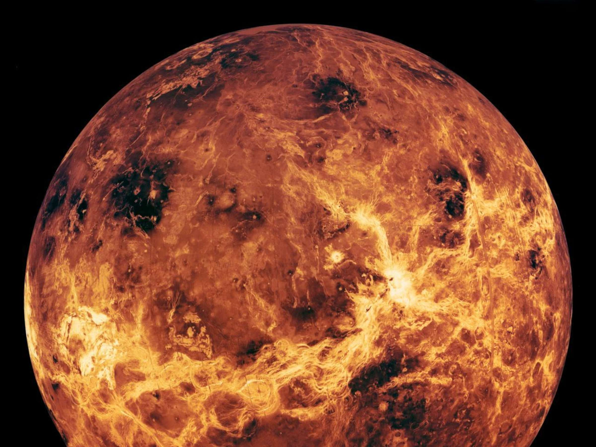

Info:Oberfläche: 460.200.000 km²Umlaufzeit: 225 Tage Radius: 6.051,8 km Entfernung von der Sonne: 108.200.000 km Tageslänge: 243d 0 h 0 min Gravitation: 8,87 m/s² |  |
|
Die Venus ist mit einer durchschnittlichen Sonnenentfernung von 108 Millionen Kilometern der zweitinnerste und mit einem Durchmesser von ca. 12.100 Kilometern der drittkleinste Planet des Sonnensystems. Sie zählt zu den vier erdähnlichen Planeten, die auch terrestrische oder Gesteinsplaneten genannt werden. Wikipedia |
|